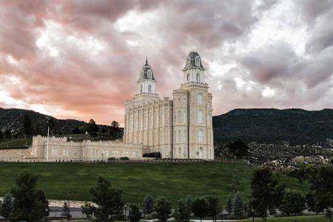
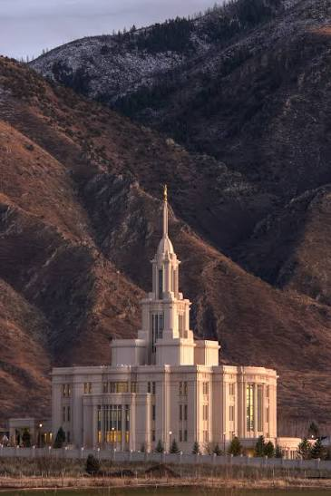
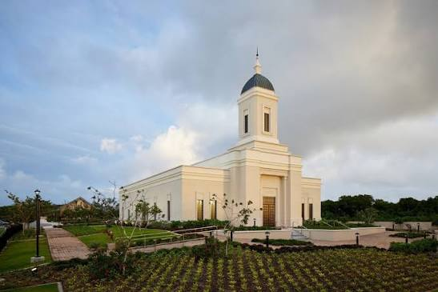
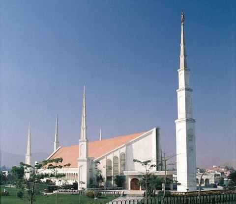
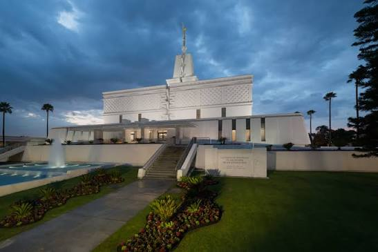
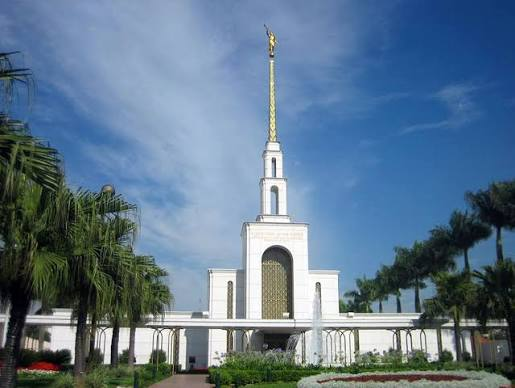
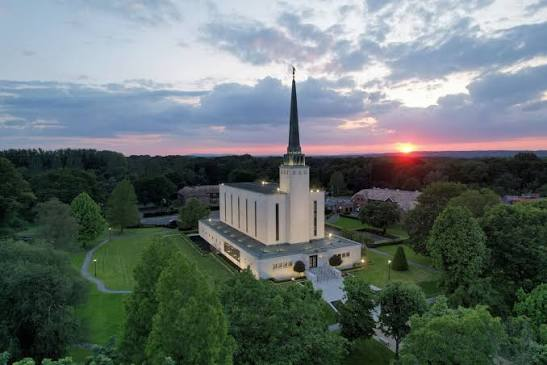
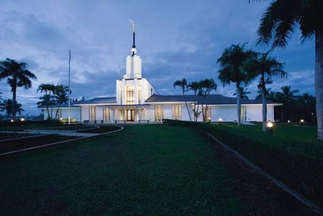
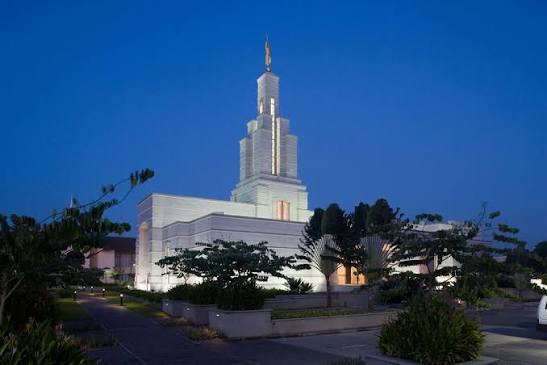
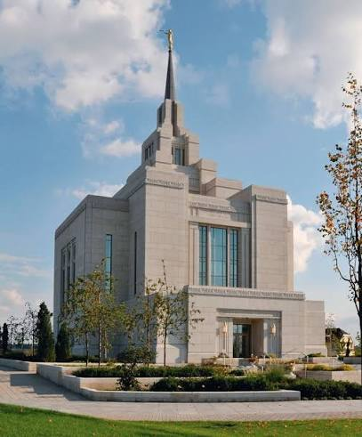

Aba Nigeria
Location: Aba, Nigeria
Dedicated: 2005, August, 7
Area: 11,500 sq ft

Manti Utah
Location: Manti, Utah, United States
Dedicated: 1888, May, 21
Area: 74,792 sq ft

Payson Utah
Location: Payson, Utah, United States
Dedicated: 2015, June, 7
Area: 96,630 sq ft

Yigo Guam
Location: Yigo, Guam
Dedicated: 2020, May, 2
Area: 6,861 sq ft

Washington D.C.
Location: Kensington, Maryland, United States
Dedicated: 1974, November, 19
Area: 156,558 sq ft

Lima Perú
Location: Lima, Perú
Dedicated: 1986, January, 10
Area: 9,600 sq ft

Mexico City Mexico
Location: Mexico City, Mexico
Dedicated: 1983, December, 2
Area: 116,642 sq ft

Salt Lake City
Location: Salt Lake City, Utah, United States
Dedicated: 1893, April, 6
Area: 253,015 sq ft

São Paulo Brazil
Location: São Paulo, Brazil
Dedicated: 1978, October, 30
Area: 48,518 sq ft

Rome Italy
Location: Rome, Italy
Dedicated: 2019, March, 10
Area: 41,010 sq ft

London England
Location: London, England
Dedicated: 1958, September, 7
Area: 42,000 sq ft

Nuku'alofa Tonga
Location: Nuku'alofa, Tonga
Dedicated: 1983, August, 9
Area: 17,500 sq ft

Accra Ghana
Location: Accra, Ghana
Dedicated: 2004, January, 11
Area: 18,600 sq ft

Kyiv Ukraine
Location: Kyiv, Ukraine
Dedicated: 2010, August, 29
Area: 11,850 sq ft
Manila Philippines
Location: Manila, Philippines
Dedicated: 1984, September, 25
Area: 26,700 sq ft